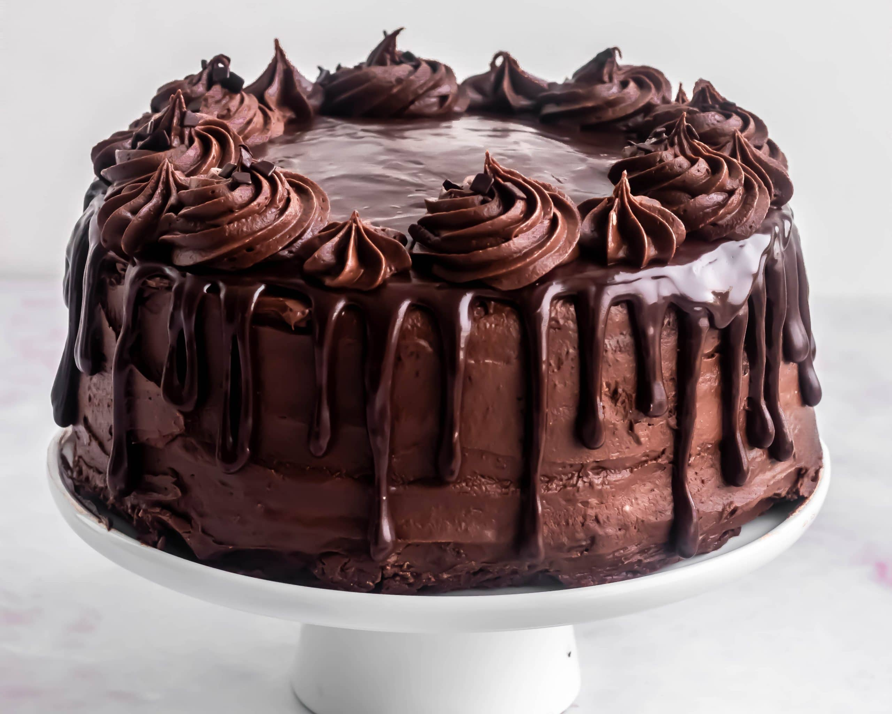

Find Your Favorite Recipe
Recipes Menu
Recipes
Grilled Cheese Sandwich

A classic comfort food, the Grilled Cheese Sandwich features golden, crispy bread with gooey melted cheese in between. Perfect for a quick lunch or a satisfying snack, this sandwich can be made with various types of cheese to suit your taste.
How to Make:
- Butter two slices of bread and place them on a hot skillet.
- Layer your choice of cheese on one slice of bread.
- Top with the second slice of bread, buttered side up.
- Cook until golden brown and cheese is melted, flipping once.
- Serve hot with a side of tomato soup if desired.
Spaghetti Bolognese

This rich and savory Spaghetti Bolognese is a classic Italian dish made with ground beef, tomatoes, and a blend of aromatic herbs and spices. It's a hearty meal that's perfect for family dinners and can be made in advance and frozen for convenience.
How to Make:
- Sauté chopped onions, garlic, and carrots in a pan until soft.
- Add ground beef and cook until browned.
- Stir in canned tomatoes, tomato paste, and spices, then simmer for 30 minutes.
- Cook spaghetti according to package instructions.
- Serve the sauce over the pasta and garnish with Parmesan cheese.
Pancakes

Fluffy and light, these pancakes are a breakfast favorite. They're quick to make and can be topped with a variety of ingredients like maple syrup, fresh berries, or whipped cream. Perfect for a weekend brunch or a special treat for the family.
How to Make:
- In a bowl, mix flour, baking powder, sugar, and salt.
- In another bowl, whisk eggs, milk, and melted butter.
- Combine wet and dry ingredients until just mixed; don't overmix.
- Pour batter onto a hot, greased griddle and cook until bubbles form.
- Flip and cook until golden brown on both sides. Serve warm.
Caesar Salad

This Caesar Salad features crisp romaine lettuce tossed in a creamy Caesar dressing with crunchy croutons and Parmesan cheese. It's a perfect side dish or a light meal on its own, known for its tangy flavor and satisfying texture.
How to Make:
- Chop romaine lettuce and place it in a large bowl.
- Add Caesar dressing and toss to coat the lettuce evenly.
- Sprinkle with freshly grated Parmesan cheese.
- Top with croutons and toss gently.
- Serve immediately for the freshest taste.
Chocolate Cake
This decadent Chocolate Cake is rich, moist, and covered in a luscious chocolate frosting. It's a favorite for birthdays, celebrations, or whenever you need a chocolate fix. This cake is easy to make and sure to impress.
How to Make:
- Mix flour, cocoa powder, baking powder, and sugar in a bowl.
- In another bowl, whisk eggs, milk, and melted butter.
- Combine wet and dry ingredients and pour into a greased pan.
- Bake at 350°F (175°C) for 30-35 minutes or until a toothpick comes out clean.
- Let cool, then frost with chocolate icing and enjoy.
Beef Tacos

Beef Tacos are a delicious and versatile dish with seasoned ground beef wrapped in soft tortillas. You can customize them with various toppings like lettuce, cheese, salsa, and sour cream. Ideal for casual dinners or gatherings.
How to Make:
- Cook ground beef with taco seasoning until browned.
- Warm tortillas in a skillet or microwave.
- Fill tortillas with seasoned beef and your choice of toppings.
- Top with shredded lettuce, diced tomatoes, cheese, and salsa.
- Serve with lime wedges and sour cream if desired.